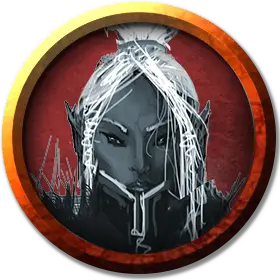

Дворянин дроу
Drow Noble
Средний Гуманоид (Эльф), нейтрально-злой

Класс Доспеха 15 (кираса)
Хиты 9 (2к8)
Скорость 30 футов
| мод | спас | ||
|---|---|---|---|
| СИЛ | 11 | +0 | +0 |
| ЛОВ | 12 | +1 | +1 |
| ТЕЛ | 11 | +0 | +0 |
| мод | спас | ||
|---|---|---|---|
| ИНТ | 12 | +1 | +1 |
| МДР | 14 | +2 | +2 |
| ХАР | 16 | +3 | +3 |
Навыки Восприятие +4, Обман +5, Проницательность +4, Убеждение +5
Чувства тёмное зрение 120 футов, пассивное Восприятие 12
Языки Знает Эльфийский и ещё 2 языка на выбор.
Опасность 1/8 (25 опыта)
Бонус мастерства +2
Особенности
Наследие фей. Дворянин дроу совершает с преимуществом спасброски от очарования и его нельзя магически усыпить.
Врождённое колдовство. Базовой характеристикой для врождённых заклинаний дворянина дроу является Харизма (Сл спасброска от заклинания 13). Он может накладывать следующие заклинания, не нуждаясь в материальных компонентах:
• Неограниченно: пляшущие огоньки [dancing lights]
• 1/денькаждое: огонь фей [faerie fire], тьма [darkness]
Чувствительность к солнечному свету. Находясь на солнечном свете, дворянин дроу совершает броски атаки с помехой, а также в проверках Мудрости (Восприятия), которые зависят от зрения.
Действия
Рапира. Рукопашная атака оружием: +3 к попаданию, досягаемость 5 фт., Одна цель. Попадание: колющий урон 5 (1d8 + 1).
Реакции
Парирование. Дворянин дроу добавляет 2 к своему КД против одной попавшей по нему рукопашной атаки. Для этого дворянин дроу должен видеть нападающего и держать рукопашное оружие.